重點摘要
這堂課的主線是「拿到一隻疑似脊髓／脊椎病變的病患，怎麼一步步從神經學檢查走到影像診斷，再從一張脊椎X光片系統性地讀出異常」。先建立影像工具選擇的思路——神經學檢查定位病灶所在的脊髓節段，才能決定要不要拍片、拍哪裡、需不需要進階到CT/MRI；接著整理脊椎攝影的技術細節（擺位、投照方向、如何減少疊加結構、各區域攝影中心），這些是拍出一張「能被正確判讀」的脊椎X光片的前提。核心是系統性判讀架構「A SPINE」與依異常特徵分類的鑑別診斷——脊椎X光片的異常大致落在排列、形狀、密度、椎間孔、椎間盤寬度與密度這幾個維度，每個維度都對應一組固定的鑑別診斷清單，這是國考與臨床讀片最常考、也最實用的思考框架。最後整理六類常見脊椎疾病（先天性異常、脊椎黏連性關節病、椎間盤感染、脊椎腫瘤、創傷、椎間盤突出退化性疾病與ANNPE）的典型影像特徵。點下方任一分類可直接跳到該小節。
定位先於選片
擺位／投照／中心
A SPINE、鑑別診斷表
先天／退化／感染／腫瘤／創傷
- 「Imaging is not everything」：神經學檢查的病灶定位（lesion localization）必須走在影像檢查之前，決定要拍哪個區域、需不需要進階到CT/MRI；影像上看到的異常還要進一步判斷臨床意義（significant vs. insignificant），不是每個異常發現都是造成目前症狀的原因。
- A SPINE 是系統性判讀脊椎X光片的口訣：Alignment（排列）、Soft tissues（周圍軟組織）、Processes（各突起構造）、Interior＝vertebral canal（椎管內部）、Nerves/spinal cord＝intervertebral foramen（椎間孔，神經根通過處）、Exterior＝vertebral body與intervertebral disc（椎體與椎間盤外部）。
- 脊椎X光片的異常大致分成六個維度各有固定鑑別診斷：排列異常、椎體形狀異常、椎體密度異常、椎間孔大小異常、椎間孔密度異常、椎間盤寬度與密度異常——背熟這張分類表，看到異常先問「這是哪個維度的異常」，再回想對應的鑑別診斷清單。
- 椎間盤感染（discospondylitis）的影像變化會落後於臨床症狀出現：早期只有終板（endplate）不規則溶解與椎間盤空間變寬或塌陷，晚期才出現硬化、贅生骨形成、甚至相鄰椎體融合；不能因為早期X光正常就排除discospondylitis。
- ANNPE（急性非壓迫性髓核突出）不同於一般退化性椎間盤疾病：與創傷相關、主要造成脊髓挫傷而非明顯壓迫，臨床上急性發作、非進行性、神經缺損對應局部脊髓病灶；MRI特徵是椎間盤空間變窄但髓核水合正常（區別於退化性椎間盤的髓核脫水），T2W於椎間盤旁呈現高訊號。
- 脊椎腫瘤依來源與位置分類：原發性腫瘤通常侵犯單一椎體、具侵襲性（骨溶解／骨增生／混合性變化）；轉移性腫瘤常侵犯一個以上椎體並可能合併其他骨骼病灶、多為骨溶解性、可合併病理性骨折；位置上再區分是否侵犯椎管內部。
影像工具選擇 Which One to Choose?
面對疑似脊髓／脊椎病變的病患，選擇影像工具不是「先拍了再說」，而是先透過神經學檢查建立初步方向。
對應脊髓節段
Imaging is not everything!!! 影像檢查是輔助工具，不能取代神經學檢查的病灶定位；拿到影像報告後，還要判斷每一項發現對目前臨床症狀而言是有意義（significant）還是無意義的意外發現（insignificant）——例如一隻因腰薦椎病灶就診的犬，若同時在胸腰椎看到輕微脊椎黏連性關節病（spondylosis deformans），後者很可能只是無症狀的意外發現，不是造成目前症狀的原因。
依構造選擇影像工具
| 構造 | 適合的影像工具 |
|---|---|
| CNS 本體（腦、脊髓實質） | 對脊髓實質本身（脊髓水腫、脊髓內出血、脊髓壓迫程度）敏感度最高的是MRI；CT對骨性結構與部分髓內病灶也有幫助，但軟組織對比度不如MRI。 |
| 脊椎周邊構造（骨骼、椎間盤、周圍軟組織） | X光（radiography）是評估脊椎骨骼排列、形狀、密度最快速可近的第一線工具；CT對骨性細節（如骨折、鈣化椎間盤物質）解析度更高。 |
選擇任何一種影像技術時，都要問四個問題：擅長顯示哪個構造？優點是什麼？缺點與限制是什麼？醫院是否有這項設備（可近性）？X光的優勢是快速、可近性高、可在門診下完成，缺點是對脊髓實質本身幾乎沒有直接顯影能力，且是二維疊加影像（見X光學基礎：二維影像的先天限制）；關於CT與MRI各自的物理原理、脈衝序列選擇與訊號判讀邏輯，見CT與MRI原理，本頁聚焦在X光片本身如何系統性判讀。
脊椎攝影技術與擺位 Radiography – Spine
要從X光片得到最大的診斷價值，取決於「怎麼拍」——正確的擺位、投照方向、避免疊加結構干擾，以及正確的攝影中心。
脊椎節區解剖總覽
脊椎依區域分為頸椎（cervical）、胸椎（thoracic）、腰椎（lumbar）、薦椎（sacral）、尾椎（caudal），各節區椎體形狀有明顯差異（棘突方向、椎體大小、關節突角度），熟悉正常解剖形狀是辨認異常形狀的前提。
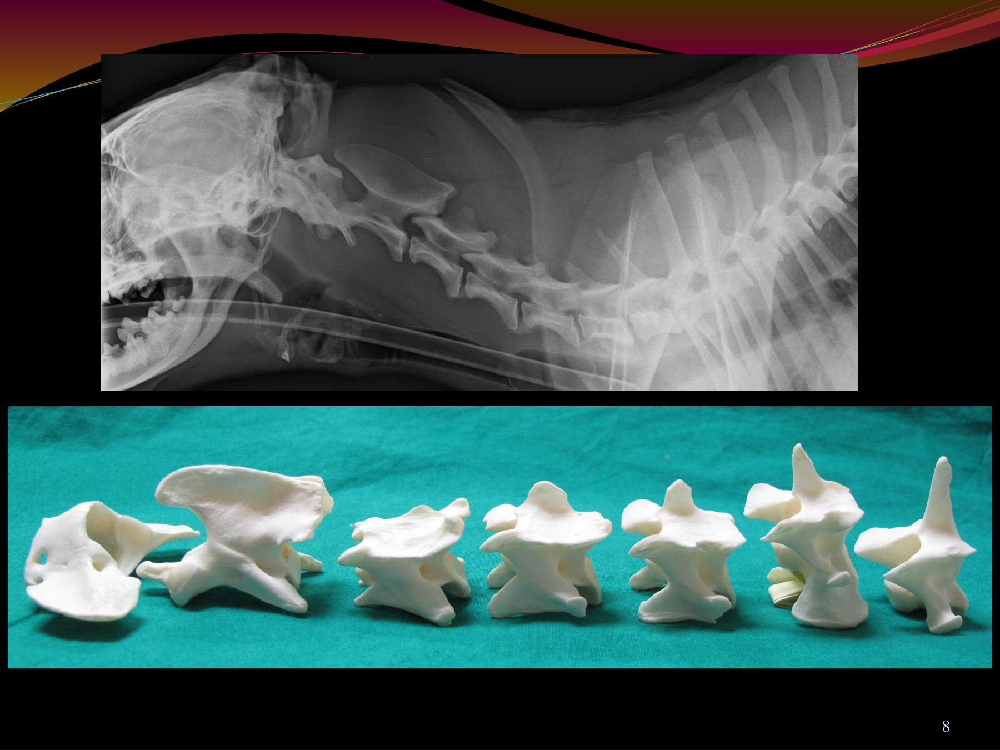
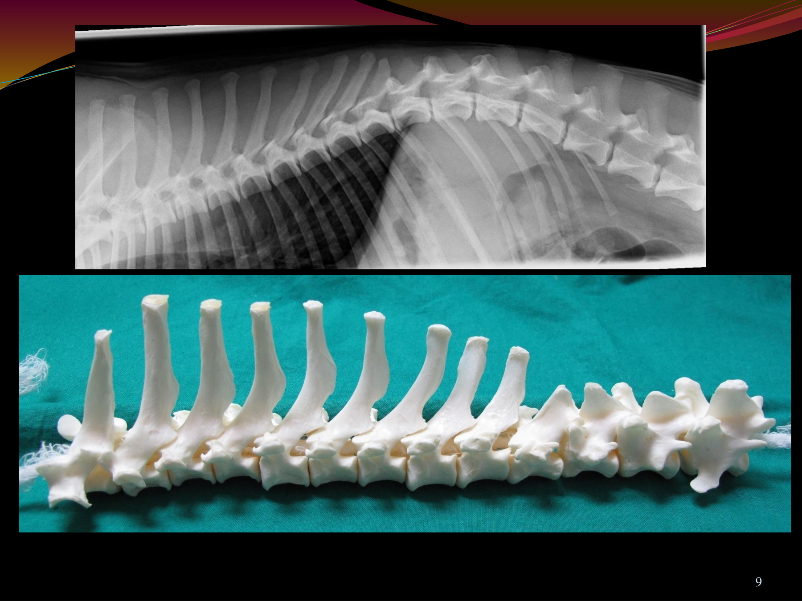
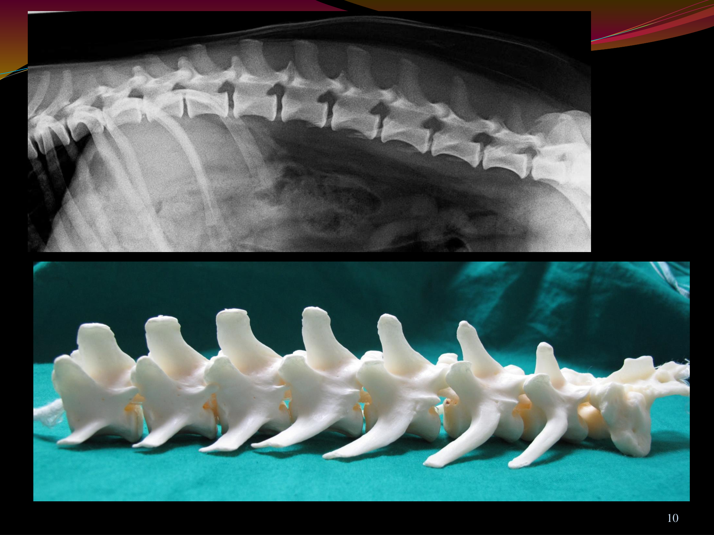
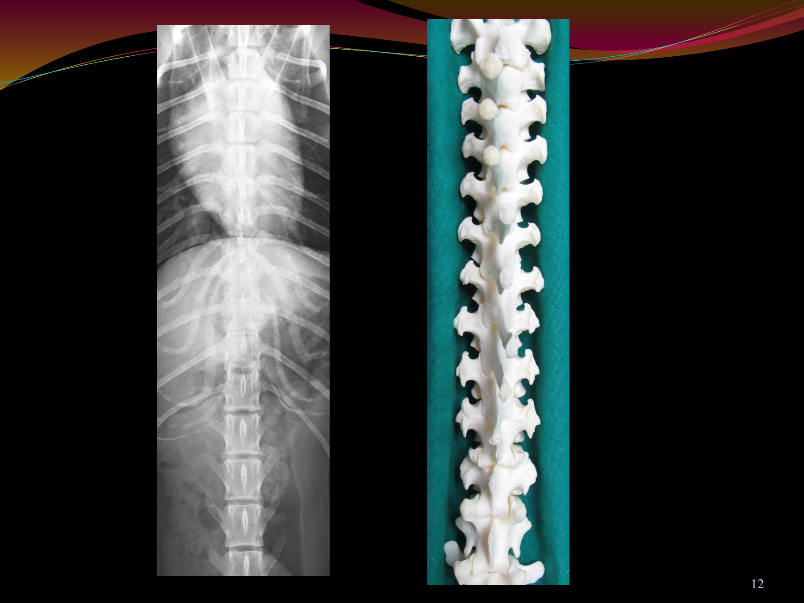
良好脊椎攝影的五個要素
病患擺位
脊椎攝影對擺位精確度要求高，常見的保定方式：
- 物理保定（physical restraint）
- 機械式保定裝置（mechanical restraint）：沙袋、泡棉墊、繩索等輔助固定姿勢
- 鎮靜或全身麻醉（sedation or anesthesia）——尤其疼痛或躁動的病患，確保姿勢標準且病患不因疼痛掙扎而移動
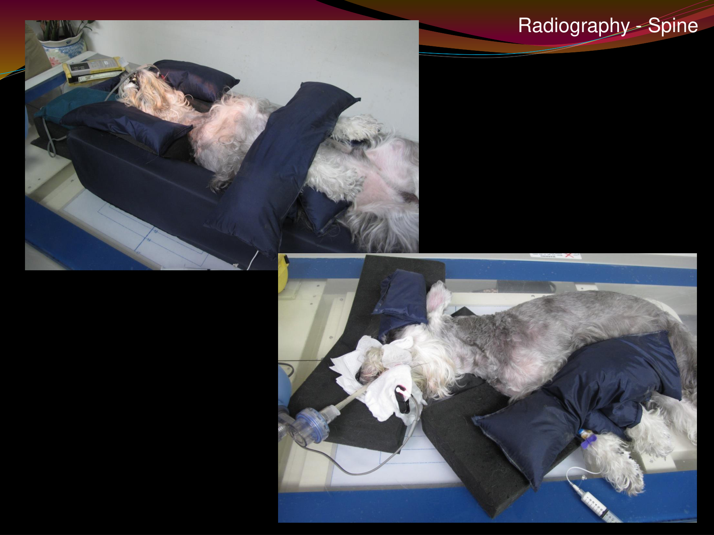
標準投照方向
- 外側位（lateral projection）
- 腹背位（ventrodorsal projection, VD）
- 斜位（oblique projection）
- 屈曲與伸展外側位（flexion and extension lateral projections）——用於評估動態不穩定性，如寰樞椎不穩定
- 牽引（traction）——用於區分固定性與可復位性的病灶
減少疊加結構：外側位
外側位攝影時，四肢容易與脊椎重疊，依區域調整拉肢方向：
- 頸椎：前肢向尾側牽拉
- 胸腰椎：前肢向頭側牽拉、後肢向尾側牽拉
判讀時可利用的解剖學標記（landmarks）：C1、C6、胸椎棘突與胸骨柄的相對位置、肩胛骨、腸骨嵴。
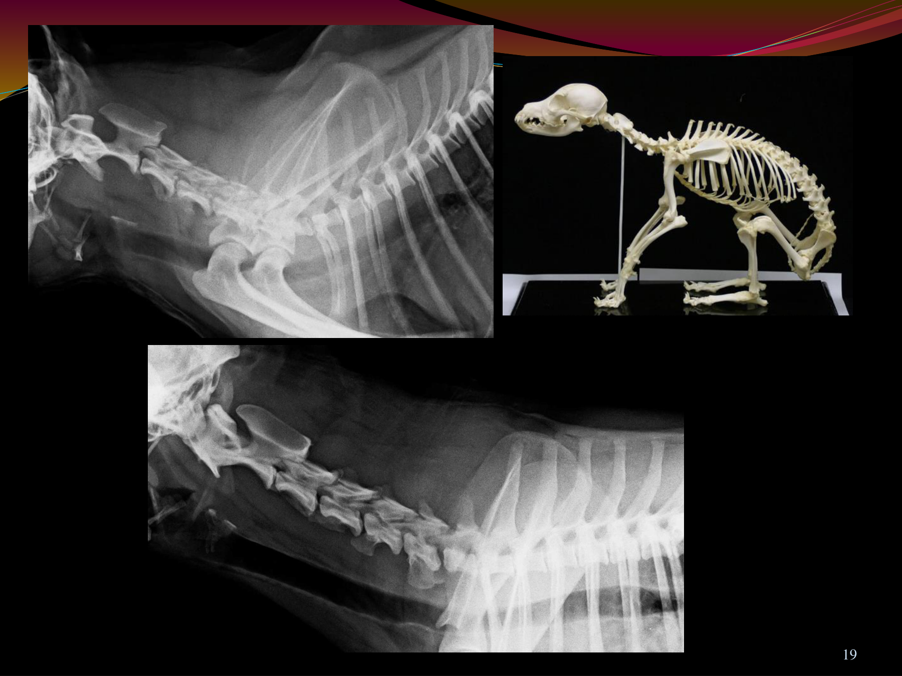
減少疊加結構：VD／DV
VD／DV投照時常見的干擾物：氣管內管（endotracheal tube）、頭骨與C1的重疊。判讀標記：C1、C6、胸骨、肩關節／肘關節／髖關節／膝關節（stifle）是否對稱。
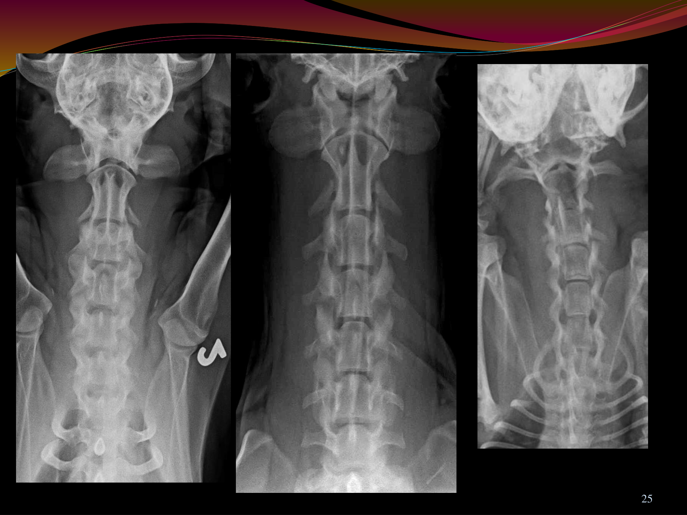
攝影中心（Center）
攝影中心的選擇要考量兩個因素：神經學檢查的病灶定位（脊髓節段不完全對應同編號的椎體）、是否涵蓋了所有可能造成臨床症狀的區域。實務上常用的區域攝影中心：
| 區域 | 攝影中心 |
|---|---|
| 頸椎（cervical） | C3–C4 |
| 頸胸交界（cervico-thoracic） | C7–T1 |
| 胸椎（thoracic） | T6–T7（肩胛骨尾側緣） |
| 胸腰交界（thoraco-lumbar） | T13–L1 |
| 腰椎（lumbar） | L3–L4（最後一根肋骨與髖關節之間） |
| 腰薦交界（lumbo-sacral） | L7–S1 |
系統性判讀與鑑別診斷
脊椎X光片的判讀分兩層：先確認影像品質與位置無誤，再依固定架構逐項檢查，避免遺漏。
讀片前檢查清單
- 病患身分確認（patient ID）
- 確認投照方向與左右（determine the position：projection、right or left）
- 影像品質是否合格？：足夠的細節與對比度、攝影中心是否正確（proper centering）、準直是否適當（proper collimation）、沖洗／處理是否正確（proper processing）
A SPINE 系統性判讀口訣
Alignment
Soft tissues
Processes
Interior：vertebral canal
Nerves：intervertebral foramen
Exterior：body／disc
具體操作時，「Alignment」「Exterior」兩項可再細分為：脊椎排列是否整齊、椎體形狀是否正常、椎體密度是否正常、椎間孔大小與密度是否正常、椎間盤空間寬度與密度是否正常——這六個維度正是下方鑑別診斷表的分類依據。
依異常特徵分類的鑑別診斷
| 異常特徵 | 可能鑑別診斷 |
|---|---|
| 脊椎排列（alignment） | 脊椎彎曲（spinal curvature）、外傷性骨折或脫臼（traumatic fracture/luxation）、寰樞椎不穩定（atlanto-axial instability）、腰薦椎不穩定（lumbosacral instability） |
| 椎體形狀（shape） | 先天性異常（congenital anomaly）、骨折（fracture）、感染（infection）、腫瘤（neoplasia）、脊椎黏連性關節病（spondylosis deformans）、黏多醣症（mucopolysaccharidosis） |
| 椎體密度（opacity） | 密度增加：骨質硬化症（osteopetrosis）、骨髓炎（osteomyelitis）、腫瘤、癒合中或已癒合骨折；密度減少：骨質疏鬆（osteoporosis）、腫瘤、骨髓炎 |
| 椎間孔大小（foramen size） | 變小：椎間盤脫出併椎間盤空間變窄、鄰近椎體增生性骨腫瘤、外傷、癒合椎（block vertebra）；變大：神經根或周圍軟組織腫瘤、手術後、外傷 |
| 椎間孔密度（foramen opacity） | 密度增加：鈣化椎間盤物質、硬腦（脊）膜骨化（ossifying pachymeningitis）、鄰近椎體增生性骨病灶、異物 |
| 椎間盤空間寬度（IVD width） | 變窄：椎間盤突出或膨出、慢性椎間盤感染、骨折或脫臼、擺位偽像；變寬：急性椎間盤感染、骨折或脫臼 |
| 椎間盤空間密度（IVD opacity） | 密度增加：椎間盤鈣化、側面脊椎黏連性關節病疊加；密度減少（增加透光性）：急性椎間盤感染、氣體（vacuum phenomenon） |
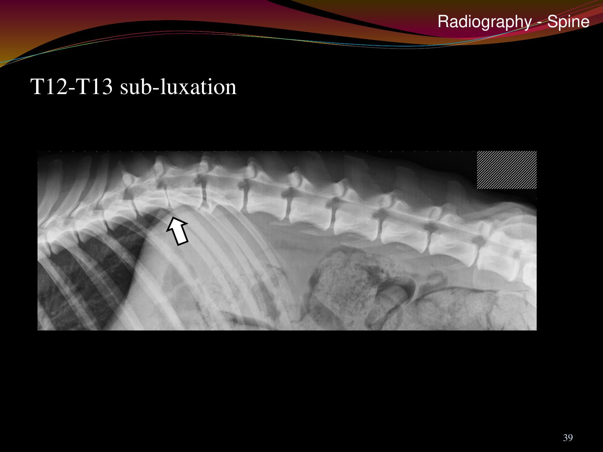
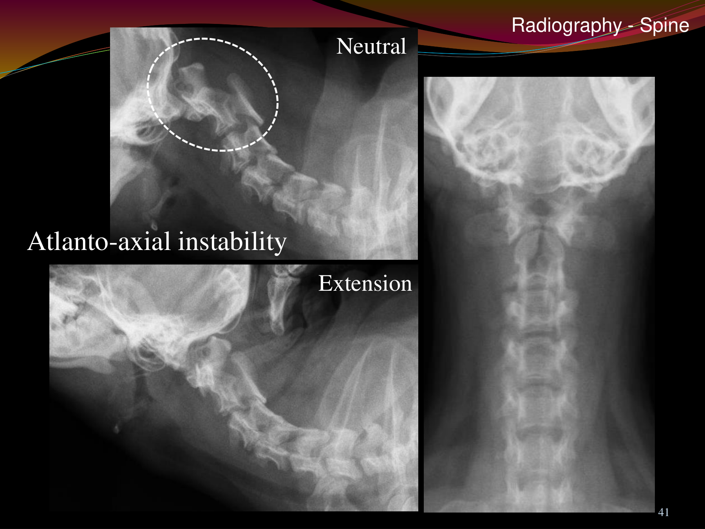
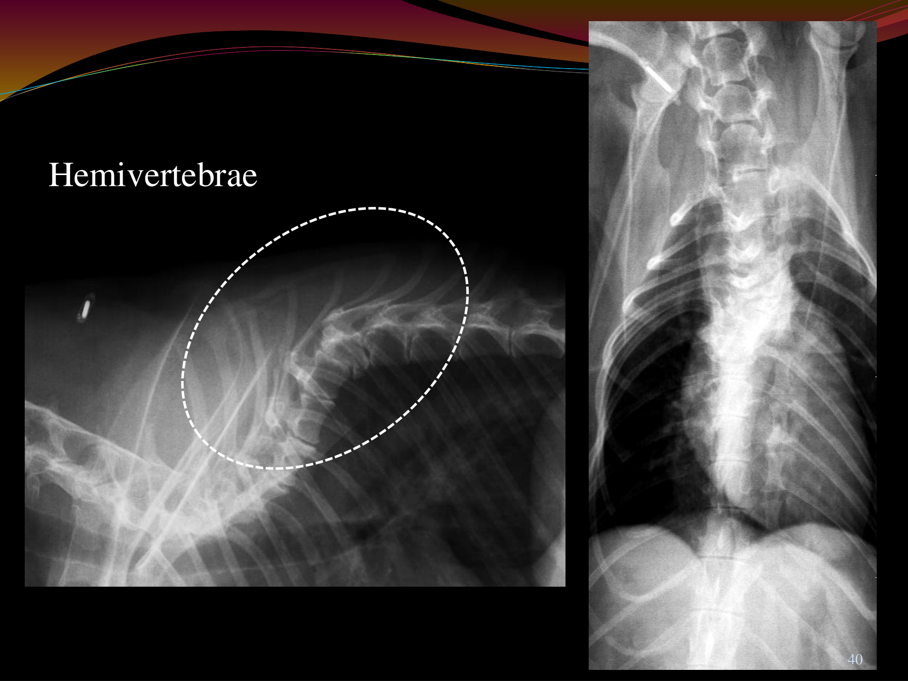
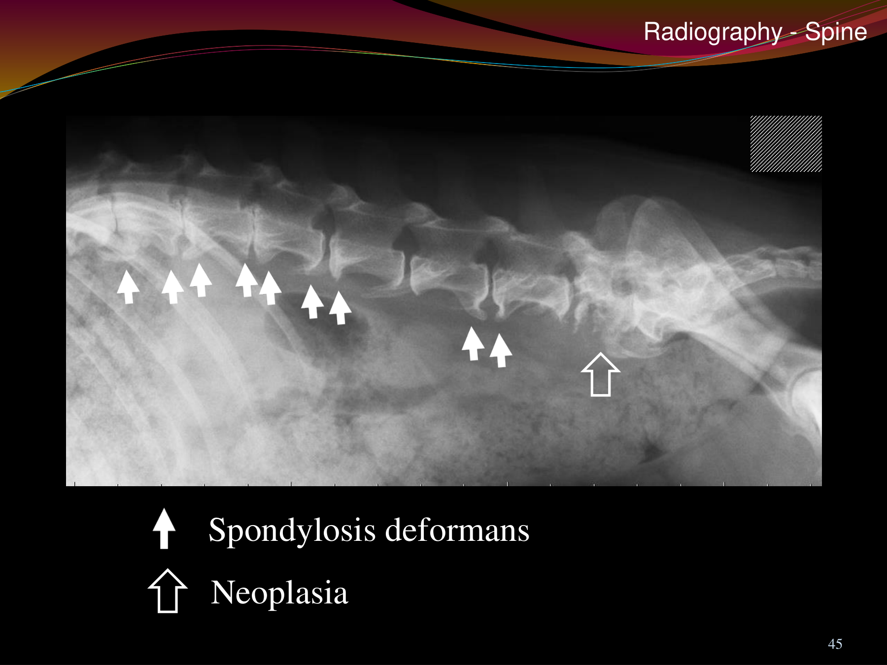
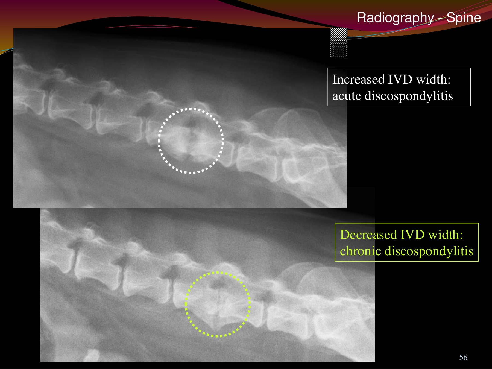
臨床上遇到任何影像異常，除了上表的部位別鑑別診斷，也可以套用通用的病因分類口訣（不同教科書字母順序略有差異，常見版本為VITAMIN D或DAMNIT V）：血管性（Vascular）、發炎／感染性（Inflammatory/Infectious）、外傷性（Traumatic）、先天性／自體免疫性（Anomalous/Autoimmune）、代謝性（Metabolic）、醫源性／特發性（Iatrogenic/Idiopathic）、腫瘤性／營養性（Neoplastic/Nutritional）、退化性（Degenerative）——幫助確認鑑別診斷清單沒有漏掉整個病因類別。
常見脊椎疾病影像特徵
把上一節「依異常特徵分類」的鑑別診斷，對應到六類臨床上最常遇到的脊椎疾病，整理各自的典型影像表現。
先天性脊椎異常 Congenital Vertebral Anomalies
多數為亞臨床（subclinical）意外發現，僅在造成脊椎不穩定或神經壓迫時才有臨床意義。常見類型：
| 類型 | 影像特徵 |
|---|---|
| 過渡椎（transitional vertebrae） | 某節椎體同時具備前後兩個區域的解剖特徵（如腰薦過渡椎），常見於腰薦交界處 |
| 癒合椎（block vertebra） | 相鄰兩節椎體先天融合為一體，椎間盤空間消失 |
| 半椎體（hemivertebrae） | 椎體僅發育一半，呈楔形，好發於胸椎，可能合併脊椎側彎 |
| 蝴蝶椎（butterfly vertebra） | 椎體矢狀面發育缺陷，VD投照呈蝴蝶翅膀狀分裂外觀 |
| 脊柱裂（spina bifida） | 椎弓背側未完全癒合閉合 |
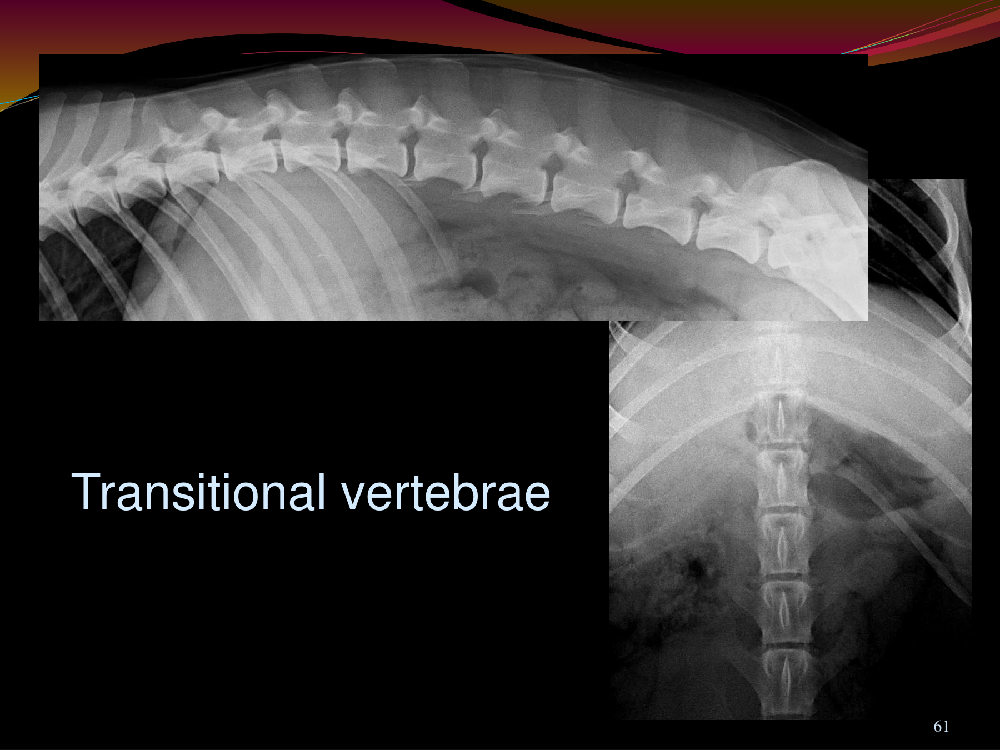
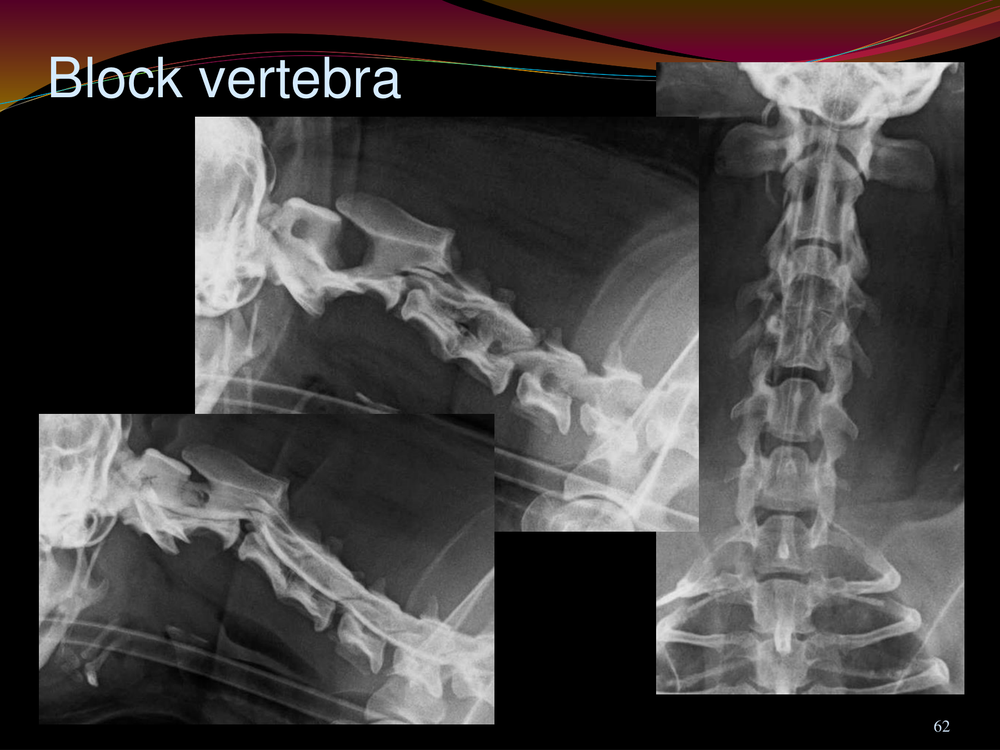
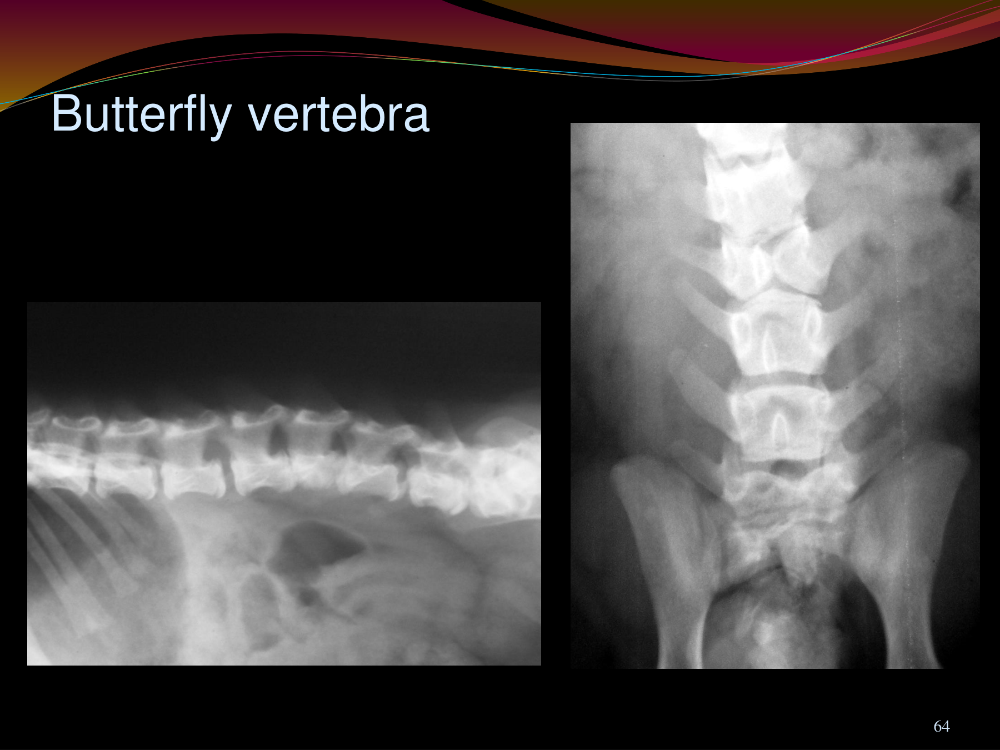
※ 半椎體（hemivertebrae）影像範例見上方系統性判讀與鑑別診斷小節。
脊椎黏連性關節病 Spondylosis Deformans重要
退化性、增生性的脊椎疾病，在椎間盤纖維環（annulus fibrosus）處形成骨性增生（osteophyte／enthesophyte），從小骨刺到跨越椎間盤空間的骨橋都可能出現。多數為亞臨床（subclinical），僅小部分病患出現僵硬、活動受限或疼痛，好發於運動犬或工作犬。判讀時最重要的是判斷這個發現對目前症狀是否有臨床意義（見上方「影像工具選擇」的significant vs. insignificant提醒）。
※ 影像範例見上方系統性判讀與鑑別診斷小節（與腫瘤造成的骨溶解並列比較）。
椎間盤感染 Discospondylitis重要
終板（vertebral endplate）與椎間盤的感染，常合併骨髓炎。關鍵重點：影像上的變化會落後於臨床症狀的出現，可能同時侵犯一個以上的椎間盤。
| 病程 | 影像特徵 |
|---|---|
| 早期 | 終板不規則溶解（irregular lysis at endplates）、椎間盤空間變寬或塌陷 |
| 晚期 | 椎間盤空間塌陷、椎體終板硬化（sclerosis）、椎體邊緣贅生骨形成（enthesophyte formation）、癒合過程中相鄰椎體可能融合 |
※ 影像範例見上方系統性判讀與鑑別診斷小節（骨溶解合併骨硬化的密度異常範例，以及椎間盤空間寬度變化範例）。
脊椎腫瘤 Vertebral Neoplasia
依來源與侵犯範圍分類：
通常侵犯單一椎體，具侵襲性（aggressive），呈骨溶解性、骨增生性或混合性變化。
常侵犯一個以上椎體，可能合併其他骨骼病灶，多呈骨溶解性，+/- 病理性骨折。
來源上也可分為：椎體本身的腫瘤，或椎外軟組織的腫瘤；位置上再區分是否侵犯椎管內部或僅侷限於椎管外部——這會直接影響是否合併脊髓壓迫症狀。
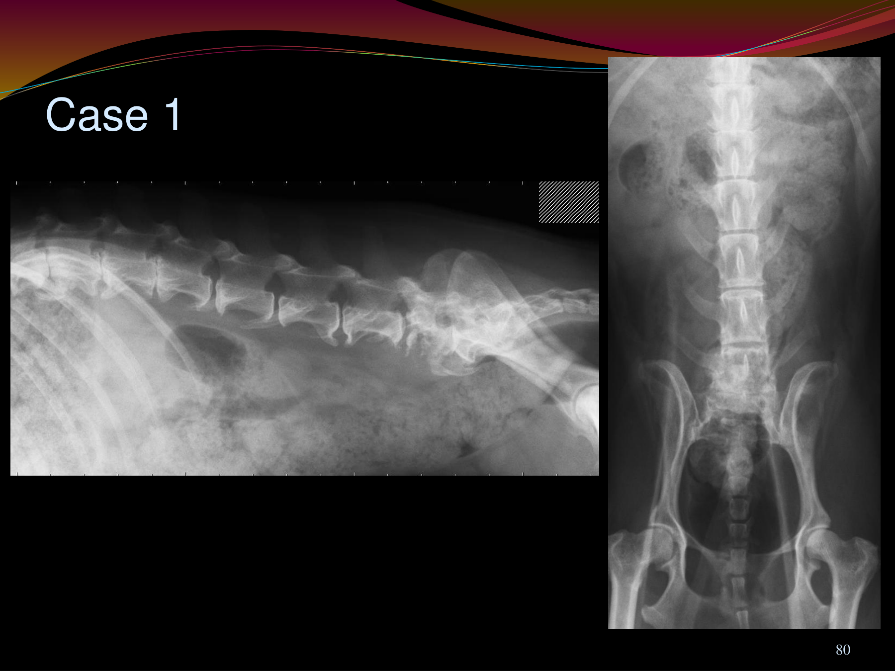
創傷 Trauma
脊椎創傷主要造成骨折（fracture）與半脫位／脫位（subluxation/luxation），X光可初步評估排列與骨折線，但骨折細節、椎管內是否有碎骨片壓迫，CT的解析度優於一般X光。
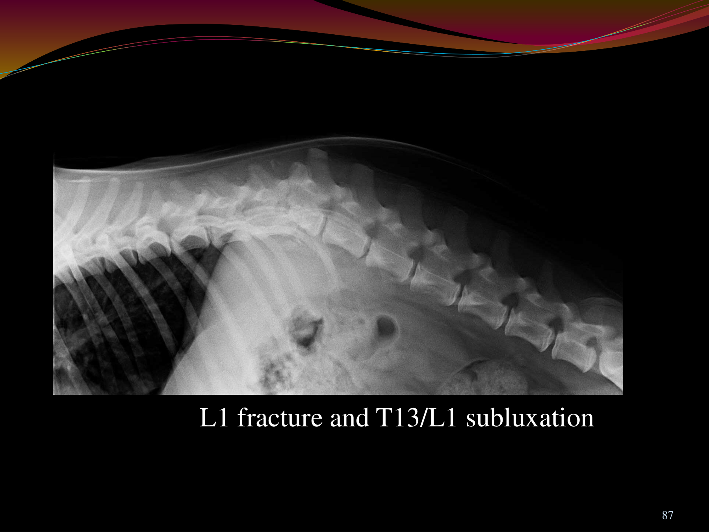
椎間盤突出退化性疾病 vs. ANNPE重要
兩者都表現為椎間盤相關的脊髓病灶，但機轉、病程與影像特徵不同，是臨床上常混淆、也是國考常考的鑑別重點。
| 項目 | 退化性椎間盤突出（degenerative IVDD） | ANNPE（急性非壓迫性髓核突出） |
|---|---|---|
| 機轉 | 椎間盤退化，髓核或纖維環物質突出／膨出壓迫脊髓 | 與外傷相關，主要造成脊髓挫傷（contusion），壓迫程度輕微 |
| 臨床病程 | 可急性或慢性、可進行性惡化 | 急性發作、非進行性，神經缺損對應局部脊髓病灶，+/- 脊椎疼痛 |
| X光 | 椎間盤空間變窄、椎間孔變窄、椎間盤物質鈣化（disc space或foramen內） | 椎間盤空間變窄、無脊椎不穩定 |
| 脊髓造影 | 硬膜外壓迫（extradural compression） | 椎間盤空間旁局限性髓內病灶，無或僅輕微硬膜外壓迫 |
| CT | 椎管內可見鈣化物質 | （較少作為首選） |
| MRI | 椎間盤退化訊號、脊髓受壓，+/- 脊髓水腫（不常見） | 椎間盤空間變窄但髓核水合正常、體積減少（區別於退化性椎間盤的髓核脫水）；椎間盤旁T2W呈高訊號；+/- 髓內出血 |
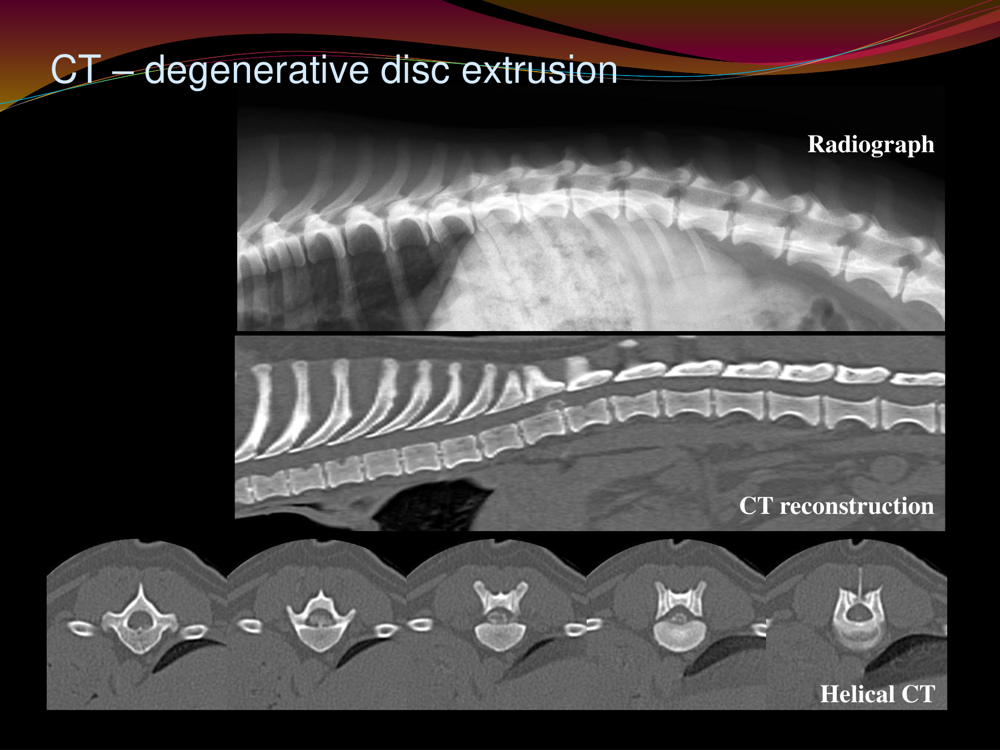
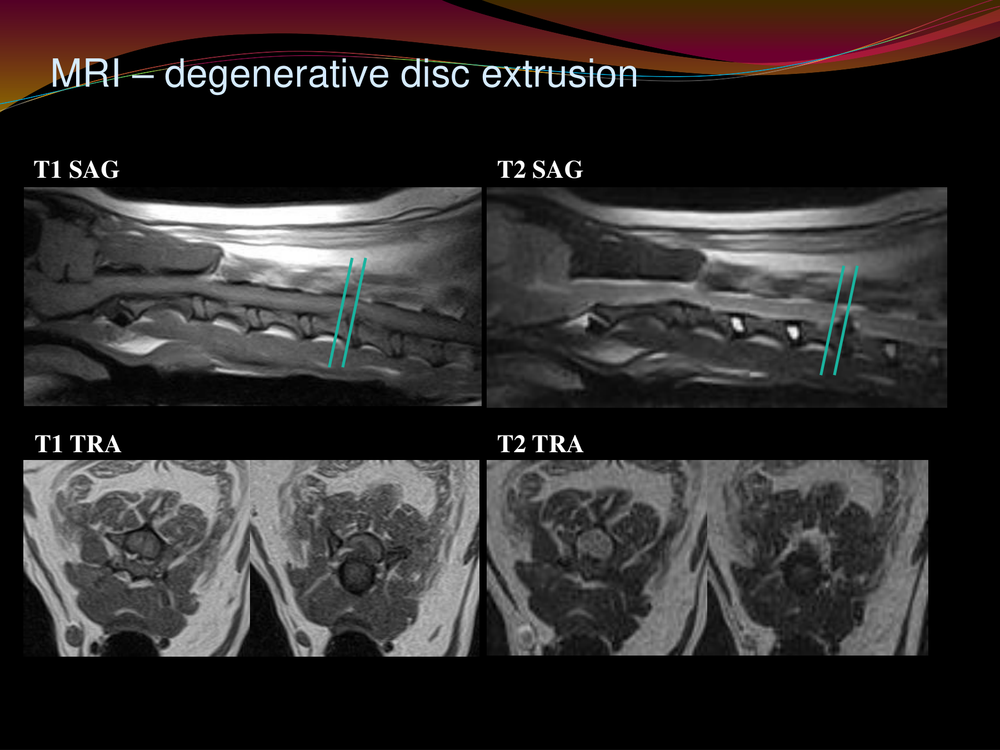
案例：4歲、公、德國牧羊犬，3週漸進性病史，不願跳躍、坐下時發出尖叫聲、步態異常；理學檢查發現腰薦部位觸診敏感（hyperesthesia）；神經學檢查提示病灶位於L6–S1脊髓節段或神經根。影像所見：L3/4至L7/S1多節椎間盤空間可見不同程度贅生骨；L7終板呈骨溶解合併骨增生變化、S1顱側終板明顯骨溶解。診斷：主要診斷為L7/S1椎間盤感染（discospondylitis）；其餘節區的脊椎黏連性關節病則判斷為意外發現，臨床意義不明——這正是本頁一開始強調的「significant vs. insignificant」判斷在真實病例上的應用。
學習重點整理
考試最愛出「A SPINE配對」「鑑別診斷分類」「discospondylitis vs. ANNPE」三種題型，複習前先快速掃過本節。
練習題 Practice Quiz
涵蓋影像工具選擇思路、A SPINE判讀口訣、依異常特徵分類的鑑別診斷、discospondylitis與ANNPE各章節重點，最後一題為臨床情境整合題，先自己作答再點「顯示答案」核對。
脊椎黏連性關節病多為亞臨床的意外發現，好發於胸腰椎交界處；本題神經學定位在L4-S3，與T12/T13的發現位置不符，應優先考慮這是意外發現，並繼續尋找L4-S3節段對應區域是否有其他更符合臨床表現的影像異常，而非直接把贅生骨當成診斷。
A SPINE口訣中，N代表Nerves／spinal cord，對應的解剖構造是椎間孔（intervertebral foramen）——神經根通過的位置；I則代表Interior，對應椎管（vertebral canal）本身。
Discospondylitis的影像變化會落後於臨床症狀的出現，早期X光可能仍是正常或只有極輕微變化；不能因為症狀初期X光正常就排除discospondylitis，必要時應追蹤複查或搭配其他檢查（如血液培養、CT/MRI）。
ANNPE的MRI特徵是椎間盤空間變窄，但髓核水合正常（不像退化性椎間盤那樣脫水），體積減少；因主要造成脊髓挫傷而非壓迫，椎間盤旁T2W呈高訊號反映脊髓實質水腫／挫傷，而非硬膜外壓迫。臨床上ANNPE發作是急性、非進行性的，與外傷相關。
(1) 主診斷：L7/S1椎間盤感染（discospondylitis）。依據：神經學定位在L6-S1節段，與L7/S1的病灶位置吻合；L7尾側終板與S1顱側終板的骨溶解合併骨增生變化，符合discospondylitis「終板不規則溶解、可合併硬化與贅生骨」的影像特徵，且病史為漸進性病程（3週）合併局部觸診敏感，臨床表現也符合感染性病灶的疼痛表現。
(2) 其餘節區的贅生骨：L3/4至L6/7的贅生骨屬於脊椎黏連性關節病（spondylosis deformans），這些節區並非神經學定位的病灶所在，臨床意義不明確，應判斷為意外發現（incidental finding），不應被誤認為是造成目前臨床症狀的原因——這正是「significant vs. insignificant」判斷原則在實際病例中的應用。